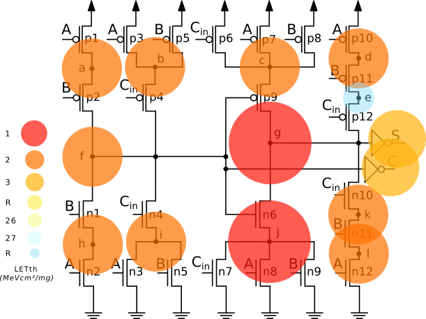
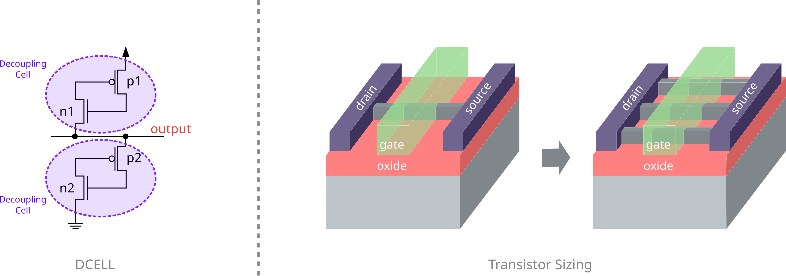
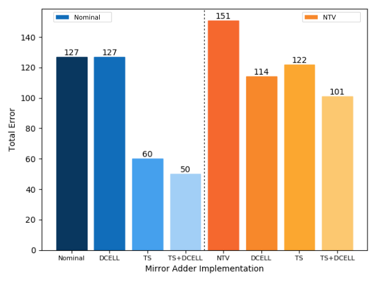

As CMOS technologies scale to advanced nodes, circuits become increasingly vulnerable to radiation-induced faults such as Single Event Transients (SET). This work investigates the radiation sensitivity of a Mirror Full Adder implemented in 7 nm FinFET technology, considering both nominal and near-threshold voltage operation.

Two circuit-level mitigation techniques are explored: Decoupling Cells (DCELL) and Transistor Sizing (TS). The analysis evaluates their impact on robustness, as well as their effectiveness in reducing error propagation across the circuit under radiation events.

The results show that both mitigation techniques significantly improve circuit robustness. Transistor Sizing provides the highest individual improvement, increasing robustness by up to 2× at nominal voltage and nearly 3× under near-threshold operation. When combined with Decoupling Cells, the techniques further enhance resilience to radiation effects.

Overall, the combined application of DCELL and Transistor Sizing achieved the best results, reducing total error occurrence by more than 60% at nominal voltage and approximately 34% under near-threshold operation. These results highlight the importance of circuit-level mitigation strategies for reliable design in advanced FinFET technologies.